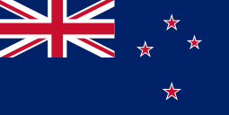

 New Zealand begins its history in the 14th century, with the crossing of the Maori peoples leaving the island of Tahiti and finding this new land. In the 17th century, this land was sighted by Abel Tasman, a European, but in 1769, the British James Cook approached the lands of New Zealand and made it part of his territory. The first British were whale and seal hunters, which made installation in parts of the islands more suitable. Soon after, the religious missionaries arrive, who in turn try to convince the Maoris to convert to Christianity and get great approval from the people. With the arrival of the British, there were also the arrival of new diseases, which caused great losses for the Maoris, so in 1840, the Treaty of Waitangi, between the Maoris and the British is sealed, giving the British the right and possession of the New Zealand and in return the Maoris would have protection, this being the most important historical record document for the country.